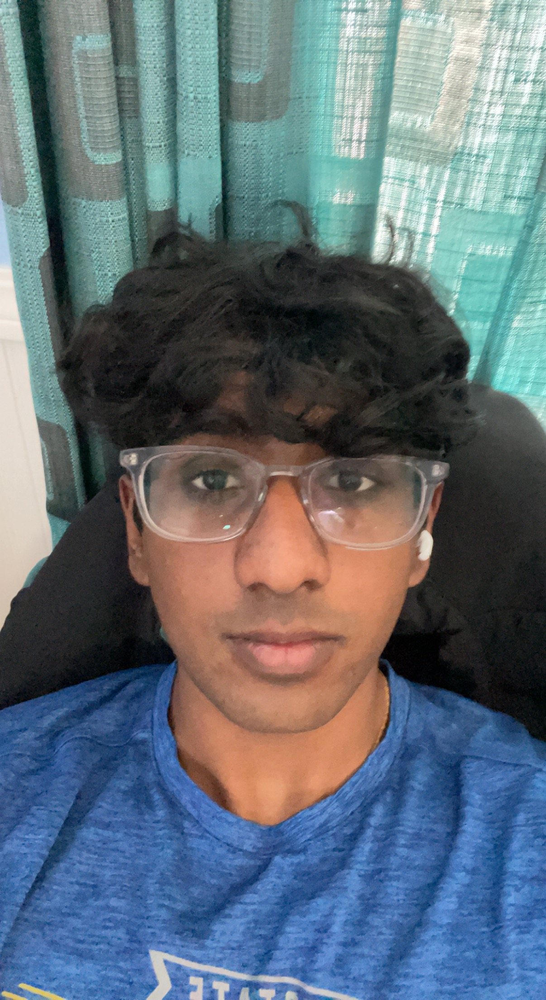

Vinay Vinod
Computer Science 2026
Hi! My name is Vinay amd I love to go the gym and eat food. I also like outdoor activities and watching sports. If you see me, say hi!
- La Burrita
- Poke Bar
- Chipotle

Best Snack
- I learned for design it's better to study existing apps. From there you can borrow features or create new ones based on what you want to improve
- I liked the part where they went over each app design. I especially liked the Spotify one
- You develop your design eye by thinking as if you were the designer of a product.
- 8/10